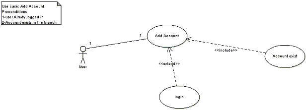
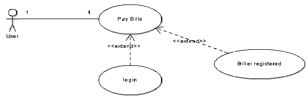
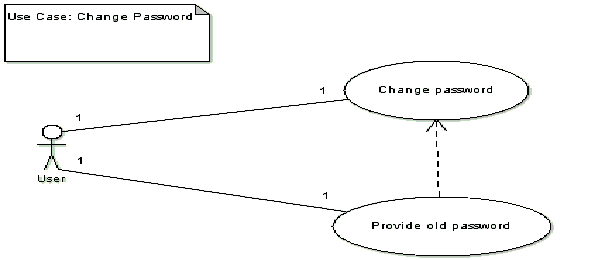
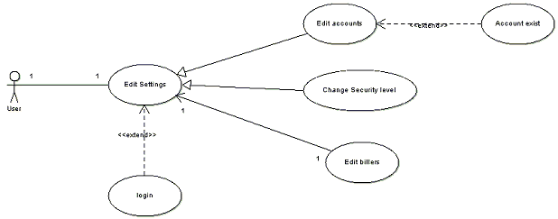
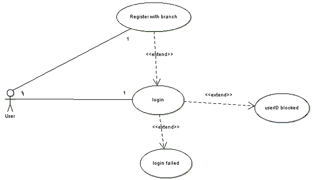
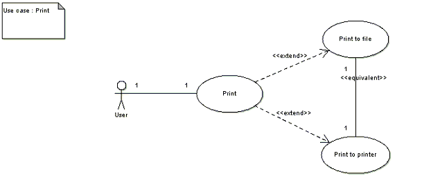
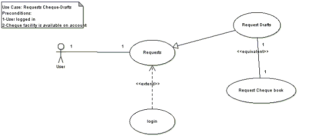
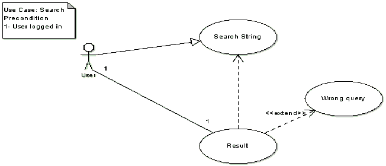
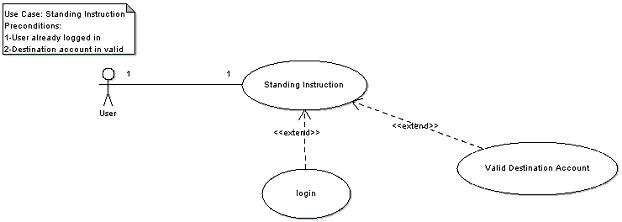
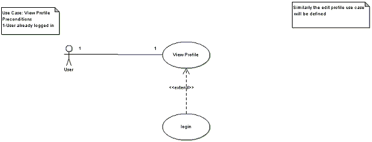

|
Use Case Model Survey |
Previous Top Next |
I. Use-case Reports:
a) Name of Use Case : ADD ACCOUNT

Description: A customer can map his pre-existing accounts to a single userID.
Pre-Conditions:
i. User is already logged in.
ii. Account that is being added already exists.
Flow of Events:
i. User enters the account number of the corresponding account.
ii. System searches for the account number.
iii. If it exists, it maps it to the userID.
iv. If it does not exist, error is returned.
b) Name of Use Case: BILL PAYMENT

Description: One can pay his various types of bills through this module.
Pre-Conditions:
i. User is logged in
ii. A biller corresponding to that bill type has already been added to his account.
Flow of Events:
i. User opens the biller to pay the bill and enters his details.
ii. On paying the bill, the system checks whether his account has sufficient balance.
iii. If yes, bill is paid; receipt is issued and balance id deducted along with commission charges (optional).
iv. If no, appropriate error message is displayed.
c) Name of Use Case: CHANGE PASSWORD

Description: Through this a user can change his/her password.
Pre-Conditions:
i. User is already logged in
Flow of Events:
i. User enters his old password along with new password.
ii. If old password matches the Database, the password is successfully changed.
iii. If password mismatch occurs between the system and provided by the user, no password change occurs.
d) Name of Use Case: CHANGE ACCOUNT SETTINGS

Description: Through this, a user can modify his account settings like changing security level, editing profile details, changing theme, etc.
Pre-Conditions:
i. User is already logged in
Flow of Events:
i. User selects the option which he wants to edit and gives the corresponding new information.
ii. For the option selected, the pre-conditions must hold in current system state.
iii. On clicking update, the system settings are updated.
e) Name of Use Case: LOGIN INTO THE SYSTEM

Description: This module denotes the entry of any user into the system and provides means of securing the authenticated users’ data.
Pre-conditions:
i. User is registered with the branch for Internet Banking Service and has been issued a userID & password.
Flow of Events:
i. User enters his username & password allotted to him.
ii. If the information is valid, he is logged in.
iii. If invalid information is provided 3 times in succession, his account is blocked.
f) Name of Use Case: PRINT BILLS, RECEIPTS, ETC.

Description: This module is made use of at many places to offer the service of printing in a particular format.
Pre-conditions:
i. User is already logged in.
ii. Printer is attached to the system.
Flow of Events:
i. User avails the service for which he is issued printing instruction.
ii. He is asked to select between printing and saving to a particular file format.
iii. On selecting the desired task is done.
g) Name of Use Case: REQUEST CHEQUEBOOK/DRAFTS

Description: Through this module, a user can request bank to issue a cheque book to his account or can also request bank to issue a draft to him.
Pre-conditions:
i. User is already logged in.
Flow of Events:
i. User requests for cheque-book or draft.
ii. If cheque book is requested, he is issued a cheque book and is asked for his mode of receiving the cheque book.
iii. If draft is requested, all the details are taken from him and mode of receiving the draft is asked.
iv. User receives his requested cheque-book/draft.
h) Name of Use Case: SEARCH UTILITY

Description: Using this module, a user can search for a desired set of outputs such as his previous transactions, etc.
Pre-conditions:
i. User is already logged in.
Flow of Events:
i. User enters the query or the search string.
ii. He selects the type of query.
iii. System searches for the query.
iv. If found, system displays the result in particular format else displays data not found error.
i) Name of Use Case: ISSUE STANDING INSTRUCTIONS

Description: A user can issue an instruction to the bank wherein he can instruct the bank to transfer money from his account to some other account periodically.
Pre-conditions:
i. User is already logged in.
ii. Destination Account exists and is valid
Flow of Events:
i. User enters his account number and the destination account number and other details.
ii. System stores the information.
iii. A background script running on server checks daily whether the standing instruction has to be followed or not.
iv. If it has to be followed, the corresponding transaction is done.
j) Name of Use Case: VIEW PROFILE INFORMATION

Description: Through this, one can view his profile information.
Pre-conditions:
i. User is already logged in
Flow of Events:
i. User clicks the module to view his information.
ii. The system searches the corresponding record and retrieves the information.
iii. It finally displays it in particular format.